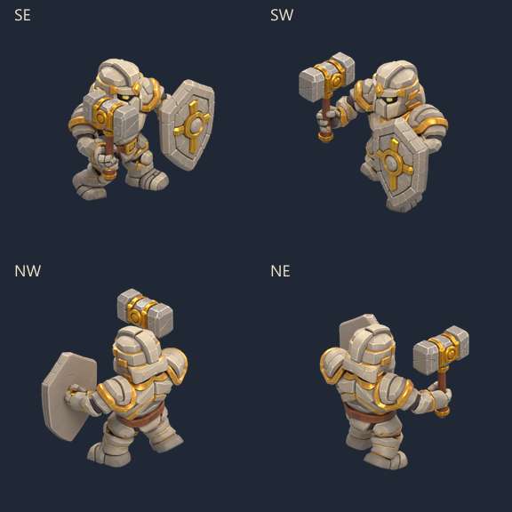
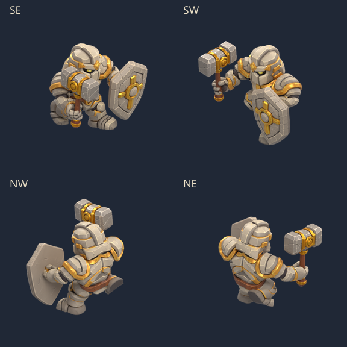

Paladin — marche et course
Le modèle Meshy équipé, rendu en sprites complets dans les quatre directions. Marche avec appuis lourds ; course plus penchée avec une phase de suspension. Marteau et bouclier suivent les mains.

Marche · 8 poses · 12 images/s
Course · 8 poses · 16 images/s
Dans Godot : ouvrir PaladinWalk.tscn ou PaladinRun.tscn, puis F6. Chaque scène propose deux couloirs, les quatre directions en aller-retour, pause, image suivante et vitesse ×2.
Source Blender · Recette et contrôles · Toutes les poses de marche · Toutes les poses de course
64 sprites de 256 px regroupés en 8 feuilles : environ 3,24 Mo de PNG. Proposition dans les scènes de contrôle ; les raids restent inchangés.